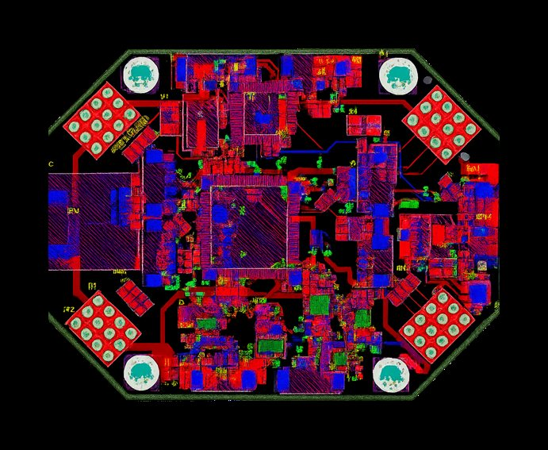
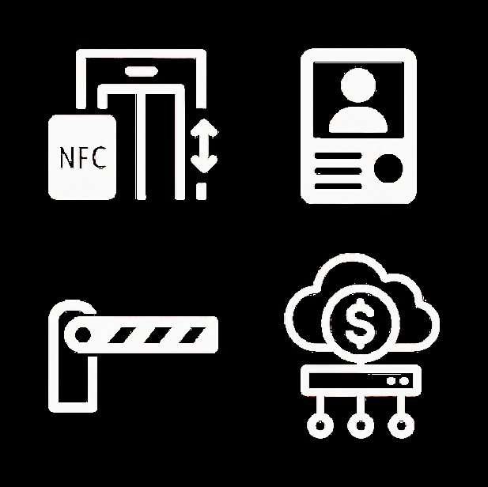
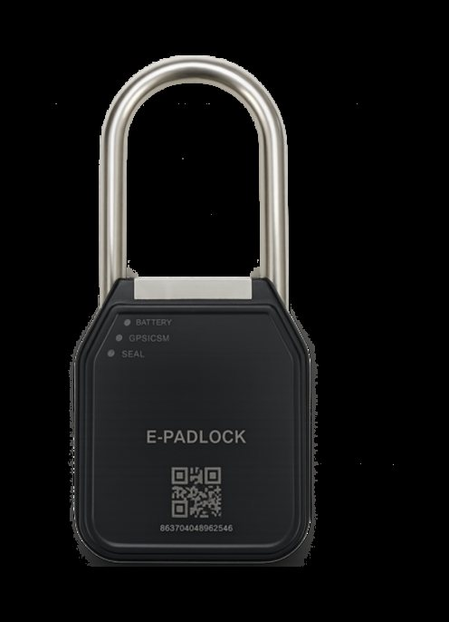
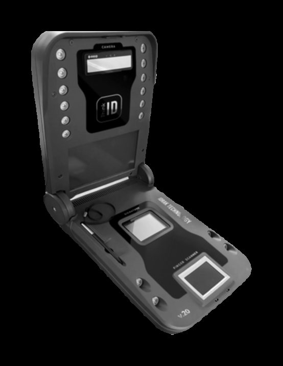
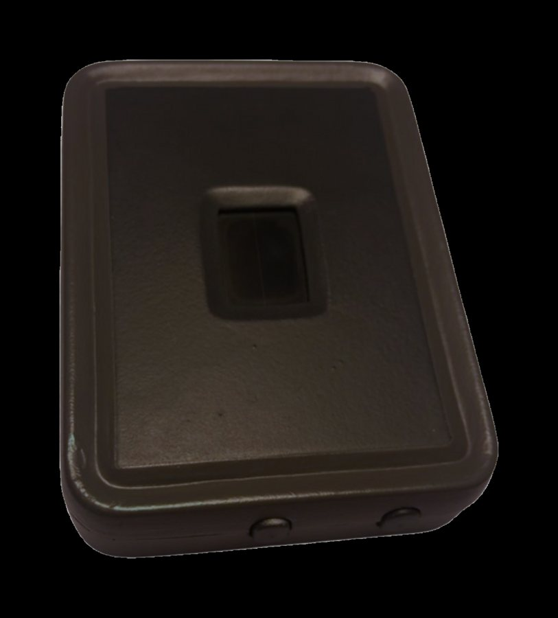
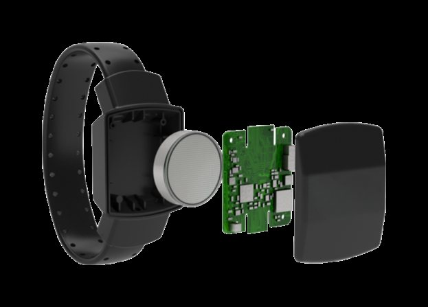
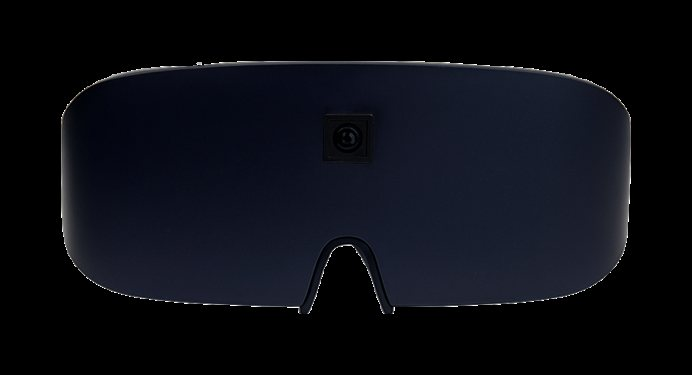
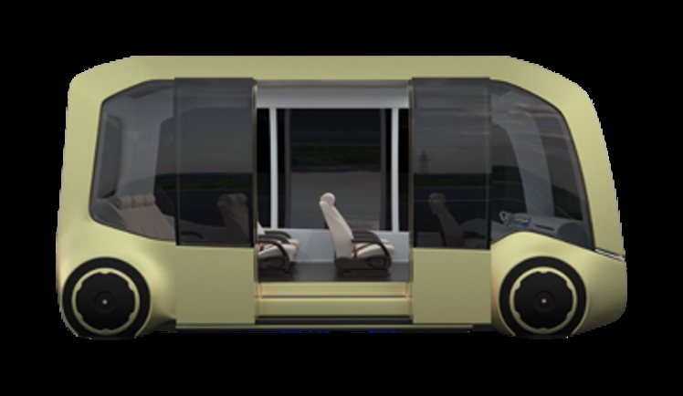

WhaleTale
This is the low-level embedded side of what I do. WhaleTale is a company in Baku that I co-founded; it makes the boards, the firmware, the enclosures and the control panels for the devices below. I work on the electrical engineering, and most of the newer devices on this page are mine to look after.
- e-gate
- flight controller
- residence manager
- e-padlock
- think-id
- fingerprint controller
- e-bracelets
- smart glasses
- smart bus
1 E-Gate
A border gate that lets a traveller through without an officer. The passport goes on the reader, which reads the chip over RFID/NFC and lights the page with ultraviolet and infrared to check it is genuine. The gate then matches the face and fingerprints against the document, with liveness checks so a photo or a fake finger won't pass, and only then releases the turnstile. Anything that doesn't add up goes to an operator's screen.
2 Flight Controller
Our own flight controller board for drones. The processor, gyroscopes, accelerometers, magnetometer and GPS sit on one board we laid out ourselves, in an IP67 housing. The autopilot flies manually or on its own, avoids obstacles, flies back to base, and lands by itself if something fails. Every flight is logged so it can be gone through afterwards.

3 Residence Manager
Access and billing for an apartment building. The lift part was built from nothing: our own board and microcontroller firmware behind a card reader in the cabin, which reads a resident's encrypted NFC card and only lets the lift go to that resident's floor. Around it sit an intercom at the entrance that rings the resident's phone with video, gates that open from the app or by reading number plates, and one bill for lift, intercom and parking. If the bill isn't paid, access stops until it is.

4 E-Padlock
A hardened steel padlock for cargo crossing borders. It opens only for an encrypted NFC card that also has to carry the right permissions. Inside are GPS, a vibration and impact sensor, an accelerometer and a gyroscope, so a knock, a cut or a lock that leaves its route is reported straight away, with satellite as the fallback where there is no other signal. Every opening is logged with a time stamp.

| Spec | Value |
|---|---|
| battery | lithium, up to 2 years |
| position | GPS, to about 3 m |
5 Think-ID
An enrolment terminal for ID documents that folds into a carry case. It takes a face photo with automatic lighting correction and background replacement, all ten fingerprints on a multispectral scanner that rejects fakes, and a signature with its pen pressure and speed. Quality is checked on the device, and the data leaves it encrypted and signed.

| Spec | Value |
|---|---|
| battery | up to 8 hours |
| set-up | about 5 minutes |
| rating | IP65, -10 to +40 °C |
6 Fingerprint Controller
A fingerprint terminal that keeps attendance for people sentenced to corrective labour. The scanner has its own processing unit, checks finger temperature and tissue to catch fake prints, and asks for a rescan when a print is poor. It pairs the print with an RFID card, keeps up to 10,000 templates on the device so it works offline, and reports over Wi-Fi with 4G LTE as backup.

7 E-Bracelets
Ankle monitors used instead of detention. Optical and capacitive sensors notice when the strap is opened or the case is tampered with, and a pulse and temperature sensor confirms it is still being worn. One version reports to a base station over RF; the other works on its own over GPS and GSM, with a ceramic antenna so it still gets a signal indoors.

8 Smart Glasses
Glasses that read printed text aloud for people with low vision. A camera in the frame captures the page, the text is recognised in several languages, and it is read out through a speaker or headphones. Speed and volume are set by voice. They were shown to the President of Azerbaijan at the opening of the sixth ASAN xidmət branch in 2021.

9 Smart Bus
A city bus run from one onboard computer. It takes in GPS, LiDAR and radar around the whole bus and 8 to 12 outside cameras, and uses them for collision warnings, lane keeping and adaptive cruise control. The same computer drives the passenger screens and stop announcements, the card readers and turnstiles that count passengers, and a health check of the bus that flags parts before they fail.

Descriptions and product images are from whaletale.tech.